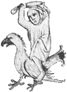

|
|
 |
|
|
Le Picatrix se présente comme un manuel de magie sympathique et
astrale. Ecrit en arabe sans doute au 12e siècle, il détient le
secret des talismans
tel que le pratiquaient les Arabes de Harran.
On doit la traduction latine de l'ouvrage à Alphonse le Sage. Il
bénéficie
d'un grand rayonnement à la Renaissance, le texte exerçant une influence
très importante sur Pierre d'Abano, Marsile Ficin, Henri Corneille
Agrippa.
Pic de la Mirandole en possédait même un exemplaire dans sa bibliothèque.
Il tomba ensuite progressivement dans l'oubli.
|
|
|
|
|
Parfait manuel du mage, le Picatrix est un des plus grands et
des plus complets traités
de magie. Il dévoile toutes sortes de formules telles que : " Comment
détruire une cité
avec le Rayon du Silence ", " comment influencer les hommes à distance
". Il présente aussi
une liste d'images magiques avec leur mode d'emploi. Il traite des
sympathies
entre les plantes, les pierres, les animaux, les planètes, et sur
la manière de les utiliser
à des fins magiques. Il évoque aussi la puissance des images magiques,
dont il présente Hermès Trismégiste comme l'inventeur. Les divers
talismans et procédures décrits visent
à des buts tels que guérir des maladies, vivre longtemps, réussir,
s'évader de prison,
maîtriser ses ennemis, s'attirer l'amour d'une autre personne …
|
|
 |
|
 |
| Selon Ghâyat Al-Hakim, le cosmos se
compose de trois mondes :
le materia, le spiritus et l'intellectus. Toute la magie du Picatrix
consiste à capter puis à guider l'influx du spiritus d'un astre
vers
la materia par le moyen de talismans. C'est pourquoi l'ouvrage révèle
la procédure à suivre : graver les images des étoiles sur le support
adapté.
Le grimoire se présente sous la forme de 4 livres :
|
| • |
Les livres I et II énoncent des prières
et des promesses
de révélations profondes mêlées à une approche philosophique
concernant l'ordonnance de la nature. On y trouve l'art de
la fabrication talismanique qui nécessite des connaissances
approfondies
en astronomie, musique, métaphysique. L'auteur dresse une
liste
des images pouvant figurer sur les talismans et correspondant
aux planètes et aux 36 décans rassemblés autour de leur signe
zodiacal respectif.
|
|
|
|
|
|
|
Pour les trois décans du
bélier, on trouvera donc les images suivantes :
|
|
|
|
|
|
" Dans la première face du bélier monte
un homme ayant les yeux rouges,
une grande et longue barbe enveloppé d'une draperie de lin blanc,
faisant de grand geste en marchant, ceint d'une écharpe rouge, se
tenant debout
et n'ayant qu'un seul pied posé comme s'il regardait ce qui vient
devant lui.
Dans la deuxième face du bélier monte une femme en écharpe vêtue
de rouge, n'ayant aussi qu'un seul pied et par sa figure ressemblant
assez à un cheval animé et en colère. Elle cherche son fils, des
vêtements et des ornements
et sa fille.
|
 |
|
|

|
|
Dans la troisième face du bélier monte un homme de couleur blanche
et rouge
ayant les cheveux rouges, paraissant en colère et fort inquiet,
tenant dans sa main droite
une épée et dans la gauche une corne et habillé de rouge. Il est
docte et parfait en science
et habile maître dans l'art de travailler le fer. Il souhaite le
bien et ne veut point le mal. "
|
|
| |
|
|
|
|
Chacune des sept planètes
possède aussi une liste d'images qui lui est propre. L'ensemble
des descriptions est accompagné en fin d'ouvrage
d'une iconographie très étrange à graver sur les talismans selon
l'astre
que l'on souhaite invoquer.
|
|
|
| |
|
 |
|
 |
|
 |
|
| |
Une image du soleil
|
Une image de Jupiter
|
Une image de Vénus
|
|
|
| |
| |
|
| • |
Le livre III traite des
pierres, plantes, animaux et autres éléments qui correspondent
|
|
aux différentes planètes et signes afin de
savoir comment invoquer les esprits
des planètes par leur nom et leur pouvoir. |
|
|
| • |
Le livre IV est consacré
aux fumigations et aux orations planétaires. |
|
|
|
| |
|
|
Plus concrètement, le Picatrix
dévoile toutes sortes de formules contre
les maladies ou pour s'attirer des influences bénéfiques.
|
|
|
| |
|
| • |
Pour détruire un ennemi
: " Faites deux images, une à l'heure du Soleil, le Lion ascendant
et la Lune tombant de l'angle de l'ascendant, l'autre dans
l'heure de Mars
sous l'écrevisse, ascendant Mars et la Lune tombant. Faites
cette image
à la ressemblance d'un homme qui en bat un autre, puis vous
l'enterrerez à l'heure
de Mars lorsque la première face du bélier montera. Cela fait,
vous pourrez commander
à vos ennemis et les maîtriser de toutes sortes de manières.
" |
| |
|
| • |
Pour guérir une blessure ou
une plaie : " Faites une image d'un scorpion
sur une pierre de bézoar dans l'heure de la Lune et lorsqu'elle
sera dans la seconde face
du Scorpion et que le Lion, le Taureau ou le Verseau seront
ascendants,
vous enchâsserez la pierre dans un anneau d'or et vous cachetterez
l'encens amolli
dans la susdite constellation puis vous en donnerez à boire
au blessé. Ces cachets vaincront l'encens et aussitôt vous
banderez la plaie. " |
| |
|
| • |
Pour multiplier les moissons
et les plantes : " Faites des images sur une lame d'argent
ayant un homme assis et autour de lui des moissons, des arbres
et des plantes et que ce soit pendant que la Lune étant en
icelui va du Soleil
vers Saturne et est enterré là dans quelque lieu que vous
voudrez. Toutes les plantes
s'y trouveront et toutes les semences y croîtront promptement
sans aucun dommage
des bêtes, ni des oiseaux, ni même de la tempête. " |
| |
|
|
|
|
| |